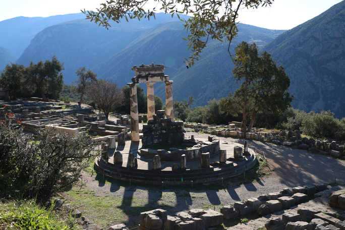
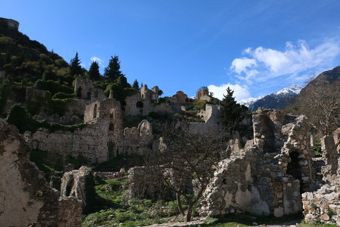
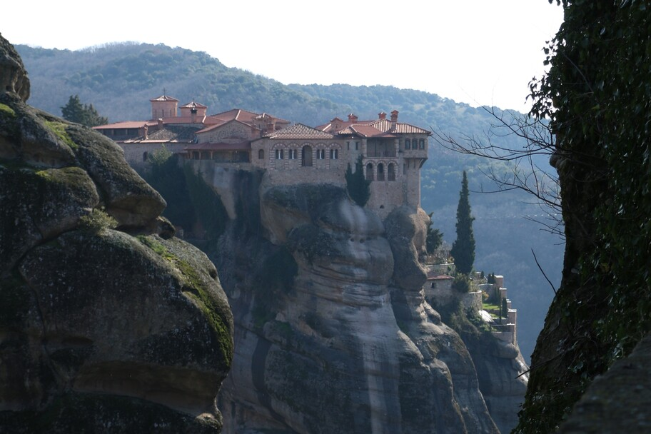

Słysząc o Grecji jednym od razu w głowie pojawia się obraz rajskich plaży, białych domów z niebieskimi dachami i przepięknego zachodu słońca. Inni zobaczą Ateny i majestatycznie wznoszący się nad nimi Akropol. Co tu ukrywać, są to najbardziej znane wizytówki Grecji. Jednak kraj starożytnych to dużo więcej. Wystarczy udać się na północ od Aten, a znajdziemy się w niczym nie przypominającym południa krajobrazie. Mimo tego, że na historii w szkole uczą nas o polis mieszczących się w dolinach górskich, zdziwił mnie fakt, że 80% powierzchni kraju zajmują tereny górzyste.
Zwiedzając środkową część Grecji nie sposób nie spostrzec jednego – biedy. Szkielety niedokończonych budynków „straszą” na każdym kroku. Wiele nich jest w budowie od lat, trudno znaleźć nowy, w pełni ukończony budynek. Sprzęt rolniczy wyglądem przypomina ten w Polsce, z czasów upadku komunizmu. Konkluzja jest jedna: krajobraz „nieturystycznej” Grecji wygoda tak, jakby czas zatrzymał się tam 30 lat temu.
Zwiedzałam Grecję po sezonie i muszę przyznać, że była to czysta przyjemność – polecam wyjazd od 1 listopada do 31 marca. W sezonie nie wybrałabym się do Grecji z dwóch prostych powodów: po pierwsze nie lubię wysokich temperatur, a w lecie temperatury mogą dochodzić nawet do 40 stopni Celsjusza, a po drugie – nie znoszę tłumów turystów. Wolę te bardziej odludne miejsca. Grecja po sezonie absolutnie skradła moje serce. Prawdą jest, że trzeba się ubierać trochę cieplej, ale jednak nie tak jak w Polsce – w Gracji zimy są łagodniejsze. Grecja po sezonie jest nie tylko „pusta”, ale po prostu tania. Bilety na stanowiska archeologiczne są o połowę tańsze, a dla dzieci i młodzieży do 18. roku życia pochodzących z Unii Europejskiej są za darmo, co pozwala sporo zaoszczędzić.
Pierwsza myśl, która przychodzi nam do głowy, gdy planujemy zwiedzanie Grecji, to starożytne ruiny. Niezaprzeczalnie są one największą atrakcją, jednak na początku chciałbym przedstawić coś mniej znanego, ale równie unikatowego, a mianowicie Meteory. Jest to położony 350 km na północ od Aten kompleks bizantyjskich klasztorów, usytuowanych na skałach z piaskowca. Obecnie otwartych jest 6 monastyrów. Dawniej jedyną drogą dostania się do klasztoru był kosz na linie, wciągany na wzgórze. Po wpisaniu kompleksu na listę światowego dziedzictwa UNESCO, do każdego wybudowano schody. Wszystkie kompleksy są inne, z każdego rozciąga się niesamowity widok. W środku monastyrów znajdziemy malowidła i relikwie świętych. Mnisi szukający odosobnienia przybyli na te tereny w IX w. Do XVI w. w skład kompleksów wchodziły 24 monastyry, ruiny niektórych można dostrzec z punktów widokowych. Był to okres, w którym życie klasztorne wiodło najwięcej osób. Obecnie w klasztorach mieszka garstka mnichów i mniszek, a niektóre zamieszkiwane są tylko przez jedną osobę. Aby wejść do środka obowiązuje odpowiedni strój – kobiety zostaną wpuszczone jedynie w długiej spódnicy. Jeśli nie są w posiadaniu takowej – przy furcie klasztornej mogą ją pożyczyć!
Na całym terenie Grecji znajdziemy pozostałości po starożytnych. Chyba najfajniejszy jest fakt, że wszystkie te miejsca opisane w mitologii naprawdę istnieją. Dzięki temu możemy odwiedzić wyrocznię w Delfach, przebiec okrążenie na pierwszym stadionie olimpijskim w Olimpii czy przejść przez legendarną Lwią Bramę w Mykenach.

Delfy poza sezonem są praktycznie opuszczone. Miasteczko położone w górach, z widokiem na Zatokę Koryncką, nie jest atrakcyjne dla Greków, którzy wypoczywać przyjeżdżają do pobliskiego miasta Arachowa, pełniącego funkcję polskiego Zakopanego. Dlatego idąc poza sezonem przez Delfy, trudno znaleźć otwartą restaurację. Za to bez problemów znajdziemy w miasteczku usytuowanym pod górą Parnas – najważniejsze miejsce kultu w starożytnej Grecji: świątynię Apollina z wyrocznią delficką. Aby do niej dotrzeć, należy podążać w górę Świętą Drogą, wzdłuż której kiedyś stało niemal 3000 posągów – działa to na wyobraźnię! Oprócz świątyni Apollina, na terenie kompleksu znajdziemy między innymi Skarbiec Ateńczyków, teatr mogący pomieścić 35 tys. widzów (zbudowany w IV w. p.n.e.), forum rzymskie oraz stadion – niestety, jest to budowla rzymska zbudowana na miejscu tej greckiej. Na uwagę zasługuje Omphalos czyli pępek świata – artefakt w kształcie półokrągłego kamienia. Ale najczęściej fotografowana jest świątynia Ateny, czyli Athena Pronaia, oddalona od głównego kompleksu o około 500 metrów. Obok stanowiska archeologicznego znajduje się muzeum, do którego trzeba zajrzeć, by zobaczyć m.in. hełmy, tarcze i posągi zdobiące kiedyś Świętą Drogę.
Pierwsze Igrzyska olimpijskie odbyły się w 766 r. p.n.e. w Olimpii na cześć Zeusa, który był tam szczególnie czczony. W świątyni Zeusa znajdował się jego posąg uznawany za jeden z siedmiu cudów świata starożytnego, wykonany przez Fidiasza. W skład kompleksu wchodzą łaźnie, bramy, świątynie oraz stadion. Wzdłuż drogi do stadionu ustawione były posągi, które według tradycji fundowali uczestnicy igrzysk oskarżeni o oszustwo. Kompleks niszczony przez pożary i wody pobliskiej rzeki, odkopany spod mułu został dopiero w XVIII wieku. Jak tradycja nakazuje, znicz olimpijski nowożytnych igrzysk zapalany jest ogniem z Olimpii, który wyrusza ze świątyni Ateny, przekazywany sobie przez poszczególnych biegaczy co 1 kilometr. Ale też ogień transportowany był statkiem oraz samolotem. Najdłuższa trasa do tej pory wynosiła 130 tys. km, gdy to igrzyska odbywały się w Pekinie. Pokonano ją wówczas w 130 dni.
Wizytówką Grecji jest ateński Akropol i nie można się temu dziwić, ponieważ robi on ogromne wrażenie. Partenon – piękna świątynia poświęcona Atenie – odwiedzany przez tysiące osób z każdego zakątka świata, pozwala nam zobaczyć jak zaawansowana była architektura starożytnych. Muzeum Akropolu doskonale przybliża bogactwa kultury starożytnej Grecji, na wystawach zobaczymy posągi i przedmioty znalezione na terenie stanowiska archeologicznego. A na ostatnim piętrze, które ma kształt Partenonu, zobaczymy płaskorzeźby niegdyś go zdobiące – te, które przetrwały i nie zostały rozgrabione. Niestety, wielu brakuje, najwięcej zostało wywiezionych do Wielkiej Brytanii i znajdują się w Londynie. W północnej części Akropolu znajduje się Erechtejon, kolejna poświęcona Atenie świątynia. W południowej jej części odnajdziemy słynny Ganek Kor, podtrzymywany przez sześć dziewczyn tańczących na cześć Artemidy. To są kopie, ale pięć oryginalnych rzeźb można podziwiać w Muzeum Akropolu, szósta znajduje się w British Museum. W Atenach na uwagę zasługuje Agora, na której znajdziemy świątynię Hefajstosa – to jedna z najlepiej zachowanych świątyń tego typu. Hefajstejon, zbudowany został w porządku doryckim w V w. p.n.e., świątynia ma nawet zachowaną część dachu z oryginalnymi zdobieniami. Będąc w Atenach nie sposób nie odwiedzić również Stadionu Panatenajskiego. Jest to jedyny na świecie obiekt sportowy zbudowany jedynie z marmuru. To ten sam budulec, z którego zbudowane są zabytki na Akropolu, co nawiązuje do bogatego dziedzictwa kraju. Stadion pokryto marmurem w II w., ale w IV w. zakazano organizacji pogańskich igrzysk, przez co popadł w ruinę. Dopiero w XIX w., po odzyskaniu przez Grecję niepodległości, zaczęto badania archeologiczne i odnaleziono jego pozostałości. Rozpoczęto jego rekonstrukcję, a w 1896 roku odbyły się tutaj pierwsze nowożytne igrzyska olimpijskie. Stadion mieści 50 tys. widzów. Spacerując po stolicy kraju natkniemy się na wiele małych stanowisk archeologicznych, m.in. bibliotekę Hadriana, łuk Hadriana, forum rzymskie.

Według wierzeń Korynt został założony przez Syzyfa około VII w p.n.e. Każdemu kojarzy się z czymś innym: miastem rozpusty i córami Koryntu, celem podróży apostoła Pawła. Już w II w. p.n.e. Korynt zajęli rzymianie, którzy odbudowali miasto popadające w ruinę, a Horacy pisał o nim: nie każdemu jest dane odwiedzić Korynt. Miał on na myśli wysokie ceny panujące w mieście w tamtym okresie. Pomiędzy ruinami znajdziemy między innymi łaźnie, ale i miejsce, gdzie ścięty został św. Paweł. Nad miastem na wzgórzu góruje Akrokorynt – twierdza niegdyś pełniąca funkcje akropolu. Cytadela rozbudowywana była przez Greków, Rzymian i Bizantyjczyków, walczyli o nią również Turcy osmańscy. Do naszych czasów przetrwały mury oraz pozostałości kilku budowli: bizantyjskich cerkwi, meczetów i wież weneckich.
Myśląc o starożytnej Grecji niewątpliwie do głowy przychodzą nam dwie nazwy Ateny i Sparta. O ile Ateny mają swój klimat, Akropol i muzea, o tyle Sparta była dla mnie po prostu rozczarowująca. Na stanowisku archeologicznym znajdziemy tylko garstkę kamieni, praktycznie nic się nie zachowało z potęgi państwa-miasta, z prostego powodu – do budowy współczesnego miasta użyto bowiem kamieni z budowli starożytnych. Za to kilka kilometrów od Sparty, na zboczu góry Tajget, położone jest ufortyfikowane, niezamieszkałe już bizantyjskie miasto – Mistra. W przeszłości to właśnie Mistra była uważana za starożytne polis. Do naszych czasów zachowały się praktycznie same ruiny z wyłączeniem kościołów. Wysokie mury i wąskie uliczki działają na wyobraźnię – bez problemu można przenieść się myślami do średniowiecznego miasteczka tętniącego życiem. Do miasta prowadzą dwie bramy, górna i dolna. Pomiędzy nimi wije się wąski dukt, którym przemieszczano się pomiędzy górnym i dolnym miastem, z bramą wewnątrz. Na szczycie góry jest zamek, którego budowa została ukończona w 1249 roku, a już kilkanaście lat później przeszedł we władanie Bizantyjczyków. Potem wybudowano katedrę św. Dariusza, którą podziwiać możemy do dzisiaj. W Mistrze zachowało się wiele monastyrów, niektóre z malowidłami datowanym na końcówkę XIII w. Na szczególną uwagę zasługuje świątynia Hagia Sophia, która w swojej historii była i kościołem katolickim, i cerkwią. W dolnej części miasta znajdziemy Pałac Despotów, obecnie odbudowywany. Na całym wzgórzu znajdują się ruiny średniowiecznych domów.
W pierwszej klasie w liceum, na lekcjach historii uczymy się o starożytnej Grecji. Wiemy, że była cywilizacja mykeńska i minojska, a później po jakimś czasie zaczęły tworzyć się polis, Ateny, państwa-miasta. Na Peloponezie znajdziemy ruiny cywilizacji mykeńskiej. Trudno jest nam sobie wyobrazić coś, co istniało w 1700 r. p.n.e. i muszę przyznać, że ruiny, choć nie tak dobrze zachowane jak te w Delfach czy Olimpii, robią niesamowite wrażenie. Ciekawsze jest to, że tak naprawdę Mykeny były dla Ateńczyków czy Spartan, których określamy mianem starożytnych – legendami. Opowieści o królu Agamemnonie i jego krwawej historii rodzinnej były właśnie tym – opowieściami. Cywilizacja mykeńska była bardzo dobrze rozwinięta. Handlowano z innymi ówczesnymi cywilizacjami w Europie, co pokazuje szeroki zasięg jej wpływów. W całym kompleksie największe wrażenie robią skarbce kopułowe. Niesamowite jest to, że w kilku z nich kopuły przetrwały do dziś. Jednym z tych skarbców jest właśnie Skarbiec Atreusza, powszechnie znany jako grób Agamemnona, zbudowany około 1250 r. p.n.e. To jego właśnie opisywał Słowacki: “Niech fantastycznie lutnia nastrojona, Wtóruje myśli posępnej i ciemnej — Bom oto wstąpił w grób Agamemnona. I siedzę cichy w kopule podziemnej(...)” Bogaty skarb z Myken, umieszczony w jednej z sal w Narodowym Muzeum Archeologicznym w Atenach, robi wrażenie. W przekazach medialnych zwykle pojawia się złota maska, tak zwana "Maska Agamemnona", ale odnaleziono kilka takich masek, a do tego mnóstwo złotej biżuterii i innych ozdób wykonanych z kamieni szlachetnych. A Lwia Brama, prowadząca do cytadeli, jest jedynym zachowanym przykładem monumentalnej rzeźby mykeńskiej. I najprawdopodobniej ta wielkość i ciężar uchroniły ją przed wywiezieniem do innego kraju, bo przez cały czas była choć częściowo odsłonięta.
Grecja skrywa w sobie wiele pięknych miejsc i zabytków, które przybliżają nas do poznania jednej z najstarszych i najlepiej rozwiniętych cywilizacji świata. To miejsce, gdzie herosi, bogowie i starożytni władcy wciąż żyją. Muzea pełne przepięknych rzeźb przypadną do gustu nie tylko osobom interesującym się historią lub sztuką. Odwiedzenie Grecji poza sezonem polecam każdemu – nie ma to jak delektowanie się widokiem na starożytne ruiny i zajadanie się soczystymi, słodkimi pomarańczami, których zbiór zaczyna się w listopadzie i trwa aż do wiosny!
